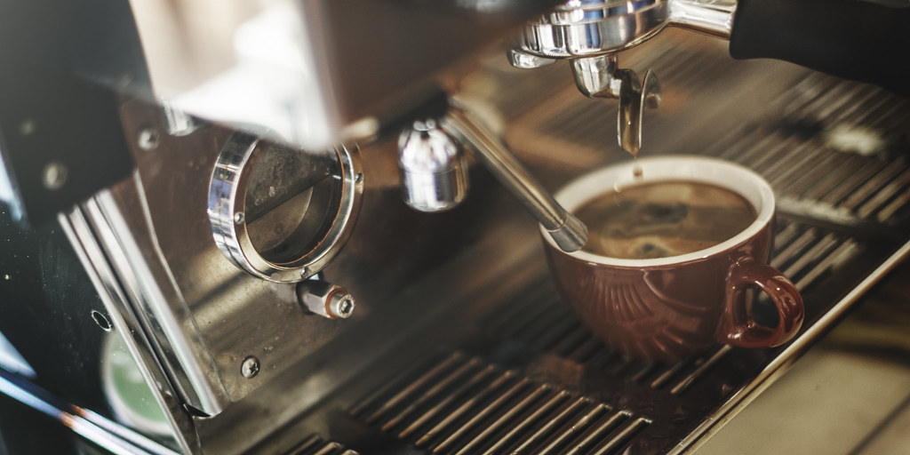

About The Daily Cup

The Daily Cup started as a set of notes for friends who kept asking why the coffee they made at home never tasted like the coffee they bought. Most of the answers turned out to be simple, and none of them needed a new machine.
Everything on this site can be done with equipment that costs less than a week of takeout coffee. We explain one idea at a time and stay away from gear reviews and numbers you would need a scale to measure.
Who This Site Is For
Our main readers are people who drink coffee every day but have never been taught how to make it. Students, people setting up a first apartment, and anyone tired of paying five dollars a morning will find the most use here.
Readers who already weigh their beans and track water chemistry are welcome, but they will probably find this too basic. That is on purpose.
How We Keep Things Simple
- We measure in tablespoons and cups, not grams.
- We never recommend equipment over fifty dollars.
- We explain why a step matters, not just what to do.
- We suggest changing one thing at a time so you can taste the difference.
Coffee Words You Will See Here
Bloom
The first small pour of water over fresh grounds. The coffee puffs up and releases gas, which is why you wait about thirty seconds before pouring the rest.
Extraction
How much flavor the water pulls out of the grounds. Too little tastes sour and thin, too much tastes bitter and dry.
Roast Date
The day the beans were roasted, usually printed on the bag. This matters much more than the expiration date.